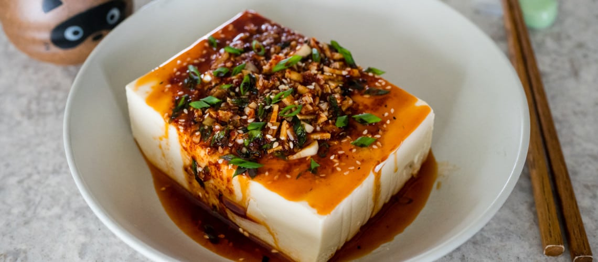

Cold Tofu

Description
Cold tofu is a very refreshing food that's perfect for summer days! It is very quick to
prepare and only uses a few ingredients that you likely have laying around in your pantry.
This dish can be made with any tofu texture, but silken tofu is recommended.
Ingredients
- Silken Tofu
- Spring Onions
- Soy Sauce
- Mirin
- Water
- Sesame Oil
- Sesame Seeds
Steps
- In a saucepan, toast 1 tsp of sesame seeds on low heat until fragrant.
- Add 3 tbsp of mirin and simmer until all of the alcohol evaporates.
- Add 3 tbsp of spy sauce (can be subsituted with tamari).
- Let simmer until sauce thickens, add water to taste.
- Pour sauce over silken tofu. Garnish with spring onions and add a drizzle of sesame oil.